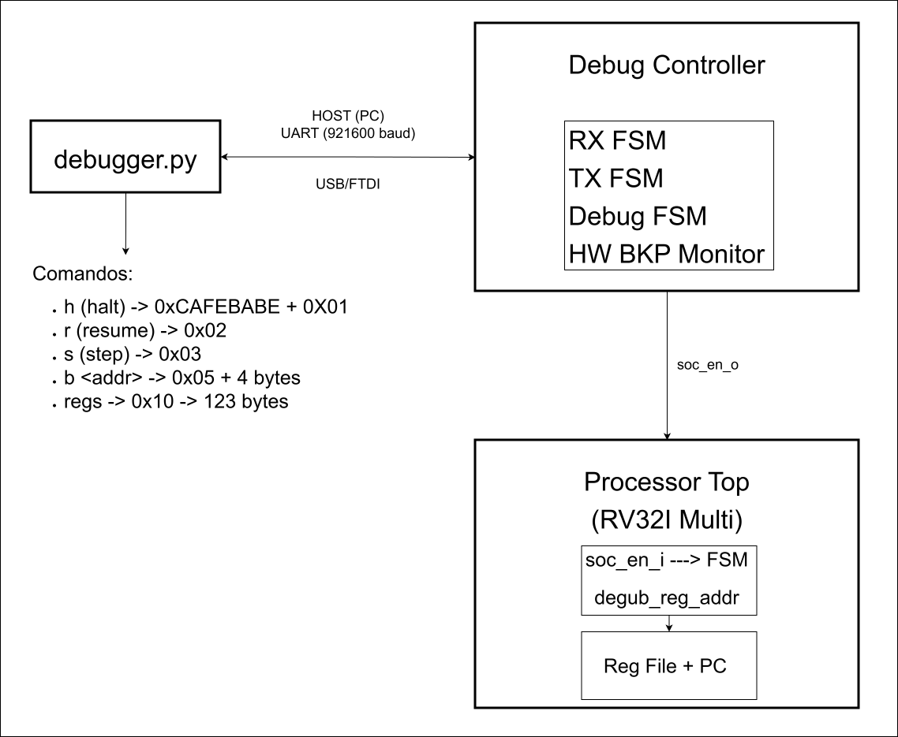

Controlador de Depuração (Debug Controller)
1. Visão Geral
O Debug Controller é um módulo de hardware responsável por implementar uma interface de depuração out-of-band para o processador RISC-V. Este componente permite que umhost externo (PC) interaja com o SoC sem intrusão na execução normal do núcleo, possibilitando:
- Pausa (halt) e retomada (resume) da execução do processador
- Execução passo a passo (step) de instruções individuales
- Leitura do estado interno (banco de registradores e PC)
- Hardware breakpoints com detecção em latência zero
- Reset controlada do processador
A arquitetura implementa um modelo de multiplexação física via RTS (Request to Send), onde o sinal RTS da UART determina se a comunicação é roteada para o SoC (execução normal) ou para o Debug Controller (modo depuração).
2. Interface de Comunicação e Protocolo
2.1 Multiplexação Física UART (Y-Split)
O Debug Controller utiliza uma técnica de multiplexação física baseada no sinal RTS da UART para determinar o destino dos dados:
┌─────────────────┐
UART_RX_i ──────┤ Y-Split MUX │──────> CPU (SoC)
│ │
UART_RTS_i ─────┤◄── RTS=0: SoC │
│◄── RTS=1: Debug│
└─────────────────┘
Comportamento do RTS: - RTS = 0 (ativo): O canal UART é roteado para o SoC. O Debug Controller ignora comandos recebidos. - RTS = 1 (repouso): O canal UART é roteado para o Debug Controller. O SoC fica "surdo" (recebe 1 lógico constante).
Implementação em VHDL (soc_top.vhd:285-290):
-- Roteamento do RX (Entrada vinda do PC)
-- Se RTS=0, SoC escuta. Se RTS=1, SoC fica surdo ('1' é o estado de repouso da UART).
s_uart_rx_soc <= UART_RX_i when UART_RTS_i = '0' else '1';
s_uart_rx_debug <= UART_RX_i when UART_RTS_i = '1' else '1';
-- Roteamento do TX (Saída para o PC)
UART_TX_o <= s_uart_tx_debug when (UART_RTS_i = '1' or s_soc_en = '0') else s_uart_tx_soc;
2.2 Sequência de Handshake
Antes de qualquer operação de depuração, o host deve iniciar uma sequência de handshake para ativar o modo debug:
| Passo | Byte | Descrição |
|---|---|---|
| 1 | 0xCA |
Magic byte inicial |
| 2 | 0xFE |
Confirmação protocolo |
| 3 | 0xBA |
Confirmação versão |
| 4 | 0xBE |
Ativação do modo debug |
Quando a FSM principal recebe 0xCA, ela transita para o estado WAIT_FE, awaiting subsequent bytes. Se qualquer byte for incorreto, retorna para IDLE.
Implementação (debug_controller.vhd:329-344):
when IDLE =>
r_soc_en <= '1';
if s_rx_valid = '1' and s_rx_data = x"CA" then dbg_state <= WAIT_FE; end if;
when WAIT_FE =>
if s_rx_valid = '1' then
if s_rx_data = x"FE" then dbg_state <= WAIT_BA; else dbg_state <= IDLE; end if;
end if;
when WAIT_BA =>
if s_rx_valid = '1' then
if s_rx_data = x"BA" then dbg_state <= WAIT_BE; else dbg_state <= IDLE; end if;
end if;
when WAIT_BE =>
if s_rx_valid = '1' then
if s_rx_data = x"BE" then dbg_state <= ARMED_WAIT_FETCH; else dbg_state <= IDLE; end if;
end if;
2.3 Formato do Protocolo de Comandos
Após a ativação do modo debug, os seguintes comandos estão disponíveis:
| Opcode | Hexa | Função | Payload |
|---|---|---|---|
CMD_HALT |
0x01 |
Pausa forçada da CPU | Nenhum |
CMD_RESUME |
0x02 |
Retoma execução | Nenhum |
CMD_STEP |
0x03 |
Executa 1 instrução | Nenhum |
CMD_RESET |
0x04 |
Reset do processador | Nenhum |
CMD_SET_BKP |
0x05 |
Configura breakpoint | 4 bytes (endereço) |
CMD_CLR_BKP |
0x06 |
Remove breakpoint | Nenhum |
CMD_READ_REG |
0x10 |
Dump de registradores | Nenhum |
2.4 Máquina de Estados RX (Recepção Serial)
O módulo RX implementa uma UART软件implementada emFSM com amostragem no meio do período de bit:
- RX_IDLE: Aguarda bit de inicio (nível 0)
- RX_START: Espera metade do período de bit para sincronização
- RX_DATA: Coleta 8 bits de dados (LSB primeiro)
- RX_STOP: Confirma bit de parada (nível 1), Valida dados
3. Controle de Execução (Halt, Resume e Step)
3.1 Mecanismo de Pausa Não-Invasiva
O Debug Controller interrompe a execução do processador através do sinal soc_en_o (Signal de Enable do SoC), que é conectado à entrada soc_en_i do processador:
Comportamento na FSM do Processador (main_fsm.vhd:186-197):
if Reset_i = '1' then
current_state <= S_IF;
elsif soc_en_i = '1' then
current_state <= next_state;
-- Lógica do "Wait State" do Branch
if current_state = S_EX_BR and s_br_wait_q = '0' then
s_br_wait_q <= '1';
elsif current_state /= S_EX_BR then
s_br_wait_q <= '0';
end if;
end if;
Quando soc_en_i = '0', a FSM simplesmente não atualiza seu estado, mantendo o processador congelado no estado atual sem corrupção de estado.
3.2 Estratégia ARMED_WAIT_FETCH
Para garantir uma pausa limpa (sem estados intermediários), o Debug Controller utiliza a estratégia de esperar até que o processador atinja a fase de busca de instrução:
ARMED_WAIT_FETCH:
se is_fetch_stage_i = '1' então
soc_en_o <= '0';
dbg_state <= DEBUG_ACTIVE;
senão
soc_en_o <= '1';
fim se;
- is_fetch_stage_i: Sinal indicando que o processador está no estágio de busca de instrução (Fetch)
- Garante que a instrução em andamento seja completada antes da pausa
3.3 Execução Passo a Passo (Step)
O comando STEP executa exatamente uma instrução e retorna ao estado pausado:
STEP_EXEC:
soc_en_o <= '1'; -- Libera CPU temporariamente
se is_fetch_stage_i = '0' então
dbg_state <= STEP_FETCH;
fim se;
STEP_FETCH:
soc_en_o <= '1';
se is_fetch_stage_i = '1' então
soc_en_o <= '0'; -- Pausa imediatamente após 1 instrução
dbg_state <= DEBUG_ACTIVE;
fim se;
3.4 Hardware Breakpoint com Latência Zero
O Debug Controller implementa um hardware breakpoint que detecta o endereço do PC de forma combinacional (mesmo ciclo de clock):
Detecção Comporcional (debug_controller.vhd:144-148):
-- Detecta o endereço combinacionalmente no mesmo ciclo de clock
s_bkp_match <= '1' when (r_bkp_en = '1' and pc_i = r_bkp_addr
and is_fetch_stage_i = '1' and r_bkp_bypass = '0') else '0';
-- A CPU é congelada IMEDIATAMENTE (Latência Zero) se houver hit
soc_en_o <= '0' when (r_bkp_hit = '1' or s_bkp_match = '1') else r_soc_en;
Mecanismo de Bypass: Após um hit de breakpoint, o sistema seta um sinal de bypass para permitir que o PCleave do endereço do breakpoint sem re-trigger:
-- 1. Se recebermos comando para andar, limpa o hit e levanta o escudo (Bypass)
if (dbg_state = DEBUG_ACTIVE and s_rx_valid = '1' and
(s_rx_data = CMD_RESUME or s_rx_data = CMD_STEP or
s_rx_data = CMD_RESET or s_rx_data = CMD_CLR_BKP)) then
r_bkp_hit <= '0';
r_bkp_bypass <= '1';
end if;
-- 2. Assim que o PC sair do endereço da armadilha, desliga o escudo
if pc_i /= r_bkp_addr then
r_bkp_bypass <= '0';
end if;
4. Injeção e Inspeção de Estado
4.1 Acesso ao Banco de Registradores
O Debug Controller possui uma porta dedicada de leitura conectada diretamente ao banco de registradores, funcionando independentemente do datapath normal:
Interface no Processor Top (processor_top.vhd:86-89):
-- Interface de Debug (Hardware Interlock)
soc_en_i : in std_logic; -- 1 = Roda normal, 0 = Congela CPU
is_fetch_stage_o : out std_logic; -- Avisa o Debugger que está no Fetch
debug_reg_addr_i : in std_logic_vector( 4 downto 0); -- Endereço do reg para leitura out-of-band
debug_reg_data_o : out std_logic_vector(31 downto 0) -- Dado lido do reg
Leitura no Reg File (reg_file.vhd:86-87):
debug_data_o <= x"00000000" when debug_addr_i = "00000" else
s_registers(to_integer(unsigned(debug_addr_i)));
Multiplexador PC/Registrador: O Debug Controller trata o PC como registrador virtual indice 32:
4.2 Fluxo de Dump de Registradores
Para ler todos os registradores, o Debug Controller itera sobre os 32 registradores mais o PC, transmitindo 4 bytes por registrador (little-endian):
DUMP_REGS:
Para cada reg_idx de 0 a 32:
Transmite byte 0 (bits 7:0)
Transmite byte 1 (bits 15:8)
Transmite byte 2 (bits 23:16)
Transmite byte 3 (bits 31:24)
Incrementa reg_idx
Tamanho total: 33 registradores × 4 bytes = 132 bytes
Implementação (debug_controller.vhd:377-399):
when DUMP_REGS =>
r_soc_en <= '0';
if s_tx_busy = '0' and r_tx_start = '0' then
case byte_idx is
when 0 => r_tx_data <= s_mux_reg_data(7 downto 0);
when 1 => r_tx_data <= s_mux_reg_data(15 downto 8);
when 2 => r_tx_data <= s_mux_reg_data(23 downto 16);
when 3 => r_tx_data <= s_mux_reg_data(31 downto 24);
end case;
r_tx_start <= '1';
if byte_idx = 3 then
byte_idx <= 0;
if reg_idx = 32 then
dbg_state <= DEBUG_ACTIVE;
else
reg_idx <= reg_idx + 1;
end if;
else
byte_idx <= byte_idx + 1;
end if;
end if;
4.3 Acesso à Memória
O Debug Controller NÃO possui acesso direto à memória RAM através do barramento. A arquitetura atual limita a inspeção de memória às seguintes opções:
| Método | Descrição |
|---|---|
| Dump de registradores | Leitura do banco de registradores via porta dedicada |
| Hardware Breakpoint | Configuração de break em endereço específico |
| Execução passo a passo | Inspeção visual progressiva via registradores |
O acesso à memória seria possível através de: 1. Leitura pelo processador: Inserção de instruções LOAD via registradores 2. DMA assistido: Utilização do controlador DMA para transferência de blocos de memória (funcionalidade não implementada na versão atual)
5. Diagrama de Arquitetura

6. Limitações e Trabalhos Futuros
6.1 Limitações Atuais
| Limitação | Descrição |
|---|---|
| Escrita de registradores | Não há suporte para write-back de registradores via debug |
| Acesso à memória | Não há acesso direto à RAM via Debug Controller |
| Watchpoints | Não há suporte para break em modificações de memória |
| Breakpoints múltiplos | Apenas 1 hardware breakpoint suportado |
| Sem单步 instruções compostas | Step funciona apenas em nucleo single-cycle por instrução |
6.2 Possíveis Extensões
- Implementação de porta de escrita dedicada para registradores
- Integração com Bus Arbitrer para acesso à memória durante halt
- Suporte a breakpoints múltiplos via tabela de endereços
- Implementação de watchpoints (detecção de escrita em memória)
- Comunicação via protocolo JTAG (IEEE 1149.1)
7. Referência de API (Software Host)
7.1 Comandos do Debugger Python
Consulte tools/debugger.py para a implementação de referência:
# Comandos disponíveis
halt() # → 0xCAFEBABE + 0x01
resume() # → 0x02 + RTS=1
step() # → 0x03
reset() # → 0x04
set_bkp(addr) # → 0x05 + 4 bytes (endereço)
clr_bkp() # → 0x06
get_regs() # → 0x10 → aguarda 132 bytes
7.2 Exemplo de Sessão
# Iniciar sessão
$ python tools/debugger.py
# Pausar CPU
(-DBG) > h
[+] CPU Interceptada (Modo DEBUG ATIVO)
# Ler registradores
(-DBG) > p
BANCO DE REGISTRADORES (RV32I)
────────────────────────────────────────────────────────
x00 (zero) : 0x00000000 │ x01 (ra) : 0x00000000
x02 (sp) : 0x00000000 │ x03 (gp) : 0x00000000
...
────────────────────────────────────────────────────────
► PC Atual : 0x000000A0
# Configurar breakpoint
(-DBG) > b 0x800
[*] Hardware Breakpoint armado em 0x00000800
# Retomar execução
(-DBG) > r
# Quando breakpoint atinge, host recebe notificação 0xBB